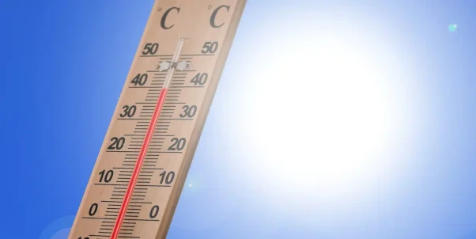
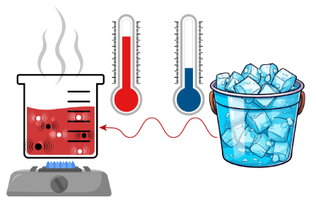
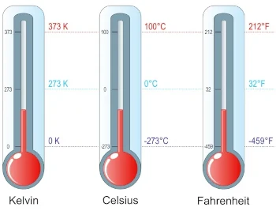
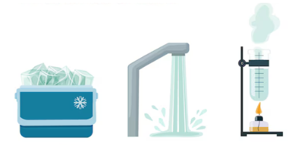

TERMOLOGIA

O que estuda?
Termologia é a área da física que estuda o calor, a temperatura, as trocas de energia témica entre os corpos. Abordando os fênomenos relacionados à energia e como essa energia é transferida de um corpo para outro, além de analisar o calor, a termologia também estuda a dilatação termica de diferentes objetos/materiais.

Principais Pontos
Temperatura
A temperatura é uma medida de quão quente ou frio algo está. Quanto mais rápida as partículas de um material se movem, mais quente ele fica. Quando as partículas se movem devagar, o material fica mais frio.

Calor
O calor é a energia que se transfere de um corpo quente para um corpo mais frio. Isso acontece até que ambos cheguem à mesma temperatura. É como se o calor "quisesse" se espalhar para equilibrar as coisas.

Escalas
Celsius (°C): É a escala que a gente usa no Brasil e em muitos outros países. A água congela a 0°C e ferve a 100°C.
Fahrenheit (°F): Usada nos Estados Unidos. A água congela a 32°F e ferve a 212°F.
Kelvin (K): A escala usada em ciências, onde 0 K é o zero absoluto, a temperatura mais baixa possível.

Mudanças de Estado
A termologia também fala sobre quando a matéria muda de estado (sólido, líquido, gasoso). O calor é o responsável por isso. Por exemplo, quando você esquenta a água, ela passa de líquida para gasosa (vapor).

Dilatação termica
Os materiais geralmente se expandem quando aquecem e se contraem quando esfriam. Isso acontece porque as partículas se afastam mais quando ganham energia térmica.
Fórmulas
Fórmula usada na conversão das escalas termométricas é:

Fórmula para converter de Celsius para Kelvin

Fórmula para converter de Fahrenheit para Kelvin

Sobre o Simulador
Tópicos
- Medir a temperatura de diferentes corpos.
- Converter de uma escala para a outra.
- Utiliza valores para formar uma escala X.
Objetivos
- Promover uma experiência de qualidade para estudantes.
- Ver na prática como um corpo se comporta em diferentes temperaturas.
- Melhorar o apredizado.